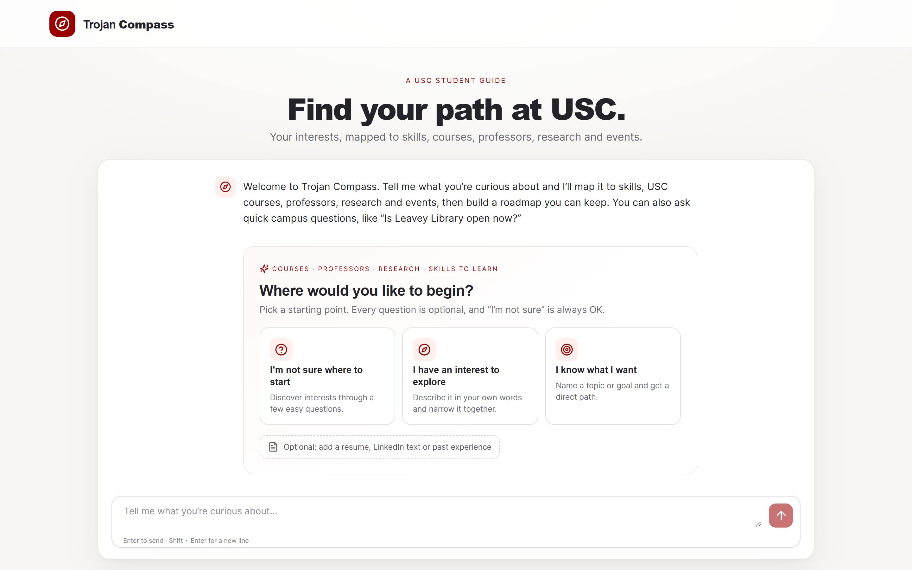
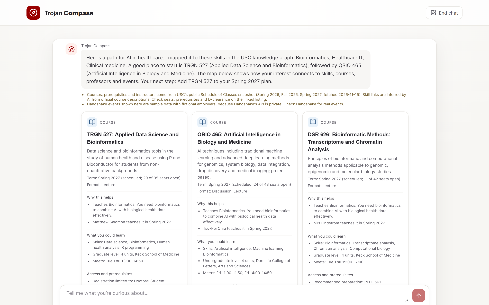
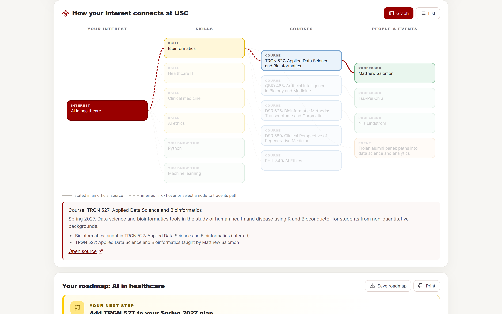
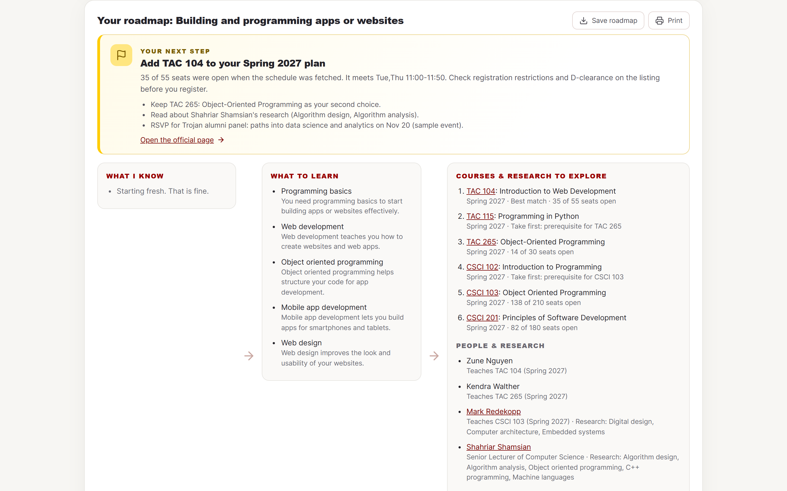
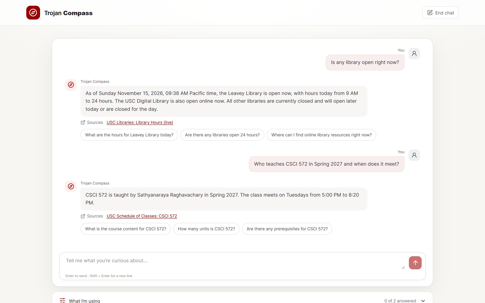

Find your path at USC:
courses, professors, research and the skills to learn, connected.
Periyakaruppan Nagappan · Riddhi Gupta · Karthik · Abhishek Nair
USC has the answer. It is just scattered across a schedule of classes, department pages, faculty directories, Handshake and a dozen office websites.
A keyword search finds courses that contain your words. A student who says “agentic RAG” needs information retrieval, and the course catalog never says “RAG”.
Don’t search the catalog. Walk the graph from what a student says to what they should do, and show every step of the walk.
| Course | 7,306 from USC’s public Schedule of Classes: Spring 2026, Fall 2026, Spring 2027. Undergraduate, master’s and doctoral, all 26 schools. |
| Skill ← teaches | 10,558 skills, 20,020 links. An LLM reads each official course description; links are labeled “inferred”. |
| Prerequisite | 3,434 links, straight from the registrar’s data. |
| Professor ← taught by | 5,180 people, 14,526 links; research areas for Viterbi faculty from official directory profiles. |
| Event | 68 Handshake events. Handshake’s API is private, so these are clearly labeled sample data. |
| Campus knowledge | ~200 official pages (registrar, health, dining, transit, OIS…) plus live library hours. |
An LLM extracts interests, skills and background. Every fact must quote the student’s own words, checked mechanically.
The student’s phrases are matched to skill nodes. The LLM may only choose nodes that exist in the graph.
Skills → courses → prerequisites → professors → research → events. Ranked by fit, level and next-term seats.
A few cards with sources, the walked graph, a roadmap to save and one next step.
“agentic RAG” → information retrieval → CSCI 572 → its Spring 2027 instructor → “Add CSCI 572 to your Spring 2027 plan: 177 of 360 seats open.”
About 3 seconds per answer. Stateless: no account, no stored profile, nothing kept after the request.

1I’m not sure where to start
easy questions; “I don’t know” is always OK
2I have an interest
say it in your own words, narrow it together
3I know what I want
name a goal, get a direct path
Optional: paste or upload a resume. It is read in the browser and never stored.

Real courses, next term, with seats and meeting times.
Why this helps ties each card to the skill it teaches.
Honest limits are stated up front: snapshot date, inferred links, sample events.

Select any node to trace the walk: interest → skill → course → professor.
Dashed lines are inferred; solid lines come straight from an official source.
A list view gives the same graph to screen readers.

One next step: the prerequisite first, otherwise the best open course for next term.
Courses in order, people and research to explore, events.
Save it as a file or print it. Nothing stays on our server.

Answers come only from evidence: live library hours, course records, ~200 official USC pages.
Each answer links its source.
If the evidence doesn’t cover it, the assistant says so.
Every card and answer links the official page it came from, with the date it was checked.
It can only pick nodes that exist in the graph, and every student fact must be a verbatim quote.
No login, no database of students, no logs of conversations. The browser holds the chat; refresh clears it.
Seats are a snapshot. Skill links are inferred. Eligibility needs confirming. All stated in the reply.
Handshake events are sample data with fictional employers, marked on every card.
234 backend tests, 36 interface tests, type-checked, plus scripted browser journeys for every path.
| Interface | React + TypeScript + Vite. Hand-built SVG graph view, accessible list view, in-browser PDF resume parsing. |
| API | Python, FastAPI, Pydantic contracts. One stateless POST /api/chat. |
| Language model | OpenAI GPT-4.1-mini or Google Gemini, structured JSON output only: extraction, routing, entity linking, grounded answers. |
| Knowledge graph | In-memory graph built at startup in 1.3 s; BM25 retrieval; the same import format loads into Neo4j for production. |
| Data pipeline | Scripts that fetch the Schedule of Classes, faculty directories and official pages, tag skills, and rebuild everything on demand. |
FastAPIReactTypeScriptPydanticOpenAI / GeminiNeo4j-readyBM25Playwright
Thank you.
Periyakaruppan Nagappan · Riddhi Gupta · Karthik · Abhishek Nair
github.com/Karthikvenugopal/Trojan-Compass